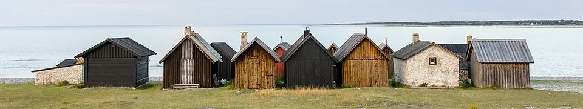
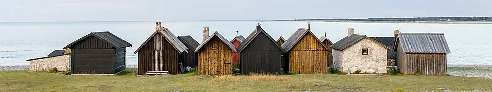

Välkommen till hotell Fårö Bo!
Hos oss bor du nära naturen i våra charmiga frukoststugor, perfekta för en avkopplande start på dagen. Varje morgon väntar en nybryggd frukostkorg fylld med lokala smaker som du kan njuta av i lugn och ro - antingen på din veranda eller ute i den gotländska morgonsolen. Här får du tid att landa, andas och uppleva Fårös unika landskap med raukar, vindpinade tallar och gyllene stränder precis runt hörnet. Vi ser fram emot att ta hand om dig och göra din vistelse minnesvärd. Välkommen till ditt hem borta från hemmet.
Höjdpunkter
- Strosa mellan de gamla sjöbodarna i Helgumannens fiskeläge
- Gå en kort promenad till de närliggande raukformationerna
- Sätt dig på en klippa och lyssna på vågorna - total stillhet
- Fotografera solnedgången över de karga stenstränderna
- Hitta ditt eget lilla vindskydd och njut av en picknick
- Känn på den gotländska kalkstenen och utforska strandens mönster
- Ta en långsam morgonpromenad när havsdimman ligger tät över stranden